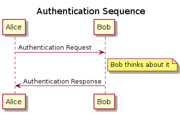
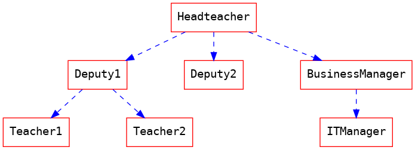
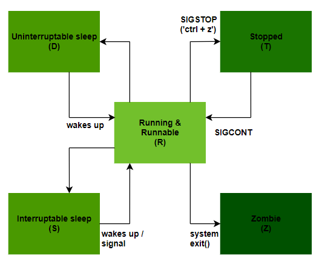
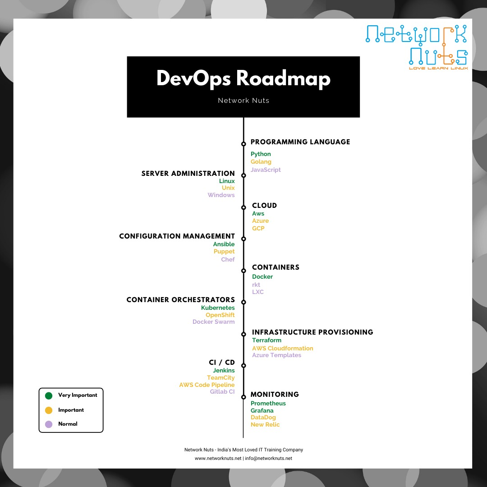

Abhijit Paul
Table of Contents
- 1. About me
- 2. Is using pc for an extended period of time a bad idea?
- 3. How to get started with emacs?
- 4. How to work with a repository that already has files?
- 5. Daily Vim Tips
- 6. Emacs tips
- 6.1. Day 1: Insert link in Emacs
- 6.2. Ep 1 (EmacsRocks)
- 6.3. List all keybindings available in a given buffer
- 6.4. Visual block mode with line numbers
- 6.5. Ep 2 (Emacs Rocks)
- 6.6. Vimgolf
- 6.7. Kill buffer and window together
- 6.8. open org-link in browser
- 6.9. VimGolf alternative for emacs - puzzlemacs
- 6.10. Open link/pdf etc from org mode
- 6.11. Org export and new line
- 6.12. org mode and conclusion
- 6.13. Exporting org mode as html file
- 6.14. Emphasizing texts
- 6.15. List in org mode
- 6.16. Date Time in org mode
- 6.17. Customize Variables
- 6.18. Save Macros
- 6.19. Auto-completion for Emacs
- 6.20. Selectrum - Orderless
- 6.21. Marginalia
- 6.22. Embark
- 6.23. How to create your first emacs function?
- 6.24. The Beauty of Emacs IMO
- 6.25. Enlarge/Shrink split windows
- 6.26. Delete a package in Emacs
- 6.27. Org-Export - customize file name and directory
- 6.28. Clear Terminal
- 6.29. Find Word in Current Line
- 6.30. TODO Learn eLisp
- 6.31. TODO Learn Org Mode
- 6.32. Evil stuffs from minibuffer
- 6.33. Game for emacs keybinding
- 6.34. TODO Diagram/UML on org mode
- 6.35. Graphing in org mode using dot
- 6.36. Write Greek Letters in Emacs
- 6.37. Zoom In/Out in Emacs
- 6.38. Tex in Emacs
- 7. Find ip and security key of your wifi
- 8. Spring Boot project
- 9. Easily create getter-setter method in eclipse.
- 10. Remote file editing using Google Drive and Emacs
- 11. Remote file editing using emacs
- 12. Getting a minimalist browser for me
- 13. More on qutebrowser
- 14. Getting Started with qutebrowser
- 15. How to raise a bug
- 16. Handy Debian commands for day to day activity
- 17. Implulse-Blocker
- 18. Don't waste time while learning to code!
- 19. Build a Presentation using Emacs
- 20. Data Science
- 21. How to use timeshift
- 22. TODO Learn Web development
- 23. TODO Learn UI/UX Development
- 24. Software Development
- 24.1. Thread on Things to learn that benefitted you the most
- 24.1.1. Tips 1 : Learn these 5 things
- 24.1.2. Tips 2 : Testing your Software Yourselves before submitting for review
- 24.1.3. IMPORTANT Tips 3 : MIT Course on Distributed System
- 24.1.4. Learning DevOps Tools
- 24.1.5. Take my time planning things out before I start coding.
- 24.1.6. Learn JavScript instead of Java C etc
- 24.1.7. IMPORTANT Data structures and algorithms
- 24.1.8. Regex
- 24.1.9. Anki Cards
- 24.1.10. Git
- 24.1. Thread on Things to learn that benefitted you the most
- 25. TODO Git Commands
- 26. TODO gcalender
- 27. TODO System Administration
- 28. Completing RHCSA Syllabus
- 28.1. Manage Local Users and Groups
- 28.2. Manage Processes
- 28.3. Controlling Services
- 28.4. Understanding SSH
- 28.4.1. TODO Why is SSH Secured?
- 28.4.2. SSH Verification in Two Ways
- 28.4.3. Why is Key Based Authentication more secured than Password based authentication?
- 28.4.4. TODO SSH and IP Spoofing
- 28.4.5. SSH Logs
- 28.4.6. Restrict the commands a user can use
- 28.4.7. X11 Forwarding
- 28.4.8. Config files
- 28.4.9. Installing telnet
- 28.4.10. IMPORTANT Summary
- 28.4.11. Question
- 29. TODO Self Hosting
- 30. TODO DevOps
- 31. TODO Backup Files
- 32. Recommendation for new Computer
- 33. Run a Apache webserver on a VM
- 33.1. Creating a VM
- 33.2. Getting Started
- 33.3. SSH into the VM
- 33.4. The Good to Knows
- 33.5. What is a webserver?
- 33.6. Install Apache Webserver
- 33.7. Run Apache Webserver and Access it from other machines
- 33.8. /etc/httpd/conf/httpd.conf
- 33.9. Host your own website
- 33.10. Set a local domain name for your website
- 34. Run a nextcloud service on VM
- 35. TODO How to properly use XiaoMi-4a Router?
- 36. How to see progress when moving a file?
- 37. TODO Why you should custom-build your startup page.
- 38. Linux Tips
- 39. Contact Me
1 About me
A learner.
I have the following skill set.
- Expert in c and java
- Swing and JavaFX and Qt5 for frontend
- File handling for backend
Data Scienceusing Python (Data Cleaning, Curating, Exploration, Visualization, Feature engineering, Modeling, Machine Learning).
2 Is using pc for an extended period of time a bad idea?
It is not.
2.1 Hardware lifetime is counted in decades
Unless you plan to use same hardware for more than a decade, running pc for an extended period is not a problem.
2.2 Booting up pc also "harms" pc
The sudden surge of electricity also harms the pc. So many people, in past, used to advocate for not turning off the pc at all.
Voltage Spike Protection
When the power supply is suddenly interrupted, it produces a high voltage in most inductive loads. This unexpected voltage spike can damage the loads. However, you can protect expensive equipment by connecting a diode across the inductive loads. Depending on the type of security, these diodes are known by many names including snubber diode, flyback diode, suppression diode, and freewheeling diode, among others.
2.3 Many people runs their pc 24/7
People who want to access files in their home pc from office, usually just keeps the pc running 24/7.
2.4 Power cost
It does cost electricity to keep the pc running. A desktop PC typically uses around 100 watts of electricity, the equivalent of 0.1 unit (about 0.2 unit when loudspeakers and printer included.).
In bangladesh, dhaka, 1 unit is about 7 tk.
So you spend 7tk for 10 hours of pc usage.
3 How to get started with emacs?
- Try the basic emacs keybindings
- Its not recommended to immediately start with evil package. However, if you are a vim guy, consider doom-emacs.
- Tinker around for a month
- Try new packages from various youtube and online channels and choose your own.
I don't really recommend using someone else configurations and using those packages. If you are already at this stage, consider giving them up and start from scratch. Only this way can you be a emacs user from a emacs newbie - by configuring everything yourself.
4 How to work with a repository that already has files?
- git init
- git remote add origin https://<authentication>@github.com/your-repo-name/
- git pull origin master
- git add .
- git commit -m "Initial commit for the sake of testing"
- git push origin master
Now add new files that you want to upload to the repo and do stuffs as usual.
5 Daily Vim Tips
5.1 Day 1 : Use Visual mode more often!
Visual mode offers rectangle selection and various other selection methods.
dd-> deletes the entire line along with the EOF. So ddp also pastes EOF wich is a PITA.
To go around it, use visual mode.
Esc v $ d p
Source here.
5.2 Gameplay
5.2.1 hjkl
- hjkl to move
- End of Line(EOL) and jk
5.2.2 web
- w to move by a word. Word means a variable in programming languages, meaning word can have
letters, digits and underscore.wbrings the cursor at the beginning of the next word - e positions the cursor to the end of the word.
- b positions the cursor at the beginning of the word.
5.2.3 temp
5.3 Delete from current character to end of file
D
simply pressing D does that.
background-position: top center; background-position: top center; After pressing D, background-position:
6 Emacs tips
6.1 Day 1: Insert link in Emacs
Press C-c C-l to enter new link.
6.2 Ep 1 (EmacsRocks)
Link.
or simply use evil-visual-mode or C-v to select a rectangle region and do stuff with that. Like deleting, replacing text using C-x r t etc
// Before using rectangle trick class random { private static void a = 10; private int b = 10; private final float c = 10; }
// Before using rectangle trick class random { this.static void a = 10; this.int b = 10; this.final float c = 10; }
6.3 List all keybindings available in a given buffer
C-h b
6.4 Visual block mode with line numbers
Source.
First, select visual-block mode using C-v
then use 5j to select the lines - in our case, zeroes
then use C-x r N to replace the zeroes with natural numbers.
(Sadly the natural numbers are covered in spaces so do a simple keyboard macro to fix that.)
char array[0]; char array[0]; char array[0]; char array[0]; char array[0]; char array[0]; char array[0]; char array[0]; char array[0]; // convert to this char array[1]; char array[2]; char array[3]; char array[4]; char array[5]; char array[6]; char array[7]; char array[8]; char array[9];
6.5 Ep 2 (Emacs Rocks)
digit-argument C-9
one two three four five six seven eight nine ten 1 2 3 4 5 6 7 8 9 10 // convert this into this - one a two a three a four a five a six a seven a eight a nine a ten a
Implementing
- F4(record macro)
- C-9 F3 (run the macro 9 times)
one 1 two 2 three 3 four 4 five 5 six 6 seven 7 eight 8 nine 9 ten 10
6.6 Vimgolf
6.6.1 Problem : Hello World
51
6.7 Kill buffer and window together
C-x 4 0
kill-buffer-window
6.8 open org-link in browser
C-c C-o
6.9 VimGolf alternative for emacs - puzzlemacs
PuzzleEmacs
I have yet to use it, I will update my experience later.
6.10 Open link/pdf etc from org mode
Using C-c C-o or org-open-at-point opens the stuffs in the default browser.
6.11 Org export and new line
org-export to html messes up newline in the original document. So we use org-export-preserve-breaks using ,#+OPTIONS: \n:t
6.12 org mode and conclusion
Image that describes the scenario perfectly.
In org-mode, all text after a heading (until the next sibling heading or higher-level heading) is assumed to belong to said heading
In other words, what you're asking for is not possible in org.
{kind=link}
If your question is mostly aimed at exporting, you may want to take a look at this similar stackexchange question.
6.13 Exporting org mode as html file
C-c C-e h h
It converts your org file into html, according to the theme you set. The following shows how to set the ReadTheOrg as your theme. Its highly recommended to set \n to true. This well preserve the newlines of your org mode into the html site.
#+SETUPFILE: https://fniessen.github.io/org-html-themes/org/theme-readtheorg.setup #+OPTIONS: \n:t
6.13.1 Here is a list of html themes available for org-export
ReadTheOrg
paperesque
6.14 Emphasizing texts
BOLD
code
code
it
strikethrough
underline
6.15 List in org mode
press Alt+Ret
Unordered list: +, -
- asd
- assdsd
- aaa
- sss
- ffff
We now have a ordered list.
- Item 1
- item 2
- item 3
6.16 Date Time in org mode
C-c .
6.17 Customize Variables
M-x customzie to see all the customizable variables for a package.
6.18 Save Macros
M-x name-last-kbd-macro to save the macro.
M-x insert-kbd-macro to load the macro.
6.19 Auto-completion for Emacs
The usual ivy or helm auto-completion does not have these features.
- Auto-completion for kill-ring
- Can search in the kill-ring
- find-file will show preview of the file
- Searching
M-x lorem modeshould give me all lorem commands. like lorem-ipsum-mode, lorem-ipsum-sadsad-mode etc. - Keep history of my searches(file search, command search) and suggest them at the top when we do
C-x C-forM-x
6.20 Selectrum - Orderless
It gives pretty nice features.
6.21 Marginalia
- Works well with all package, be it ivy helm or selectrum
- Zamansky recommends it (Main point xD)
- Gives 1-5 all features.
You can use it to search anything -> searching among heading in a org file, searching commands, files, kill-ring etc.
6.22 Embark
Its not really an auto-completion framework but its a very very amazing package nonetheless. When you select something, it recognizes it as a text, link or org file selection and brings up all the option available for that selection. Capitalize them, fill the region, sort them etc etc.
6.23 How to create your first emacs function?
We can split the buffer and open two files in each of the split buffer using -
C-x 2
C-x C-f one.txt
C-x o
C-x C-f two.txt
Find out what functions the keystrokes called to do it, using C-h k your-keystrokes. We get the following function names using C-h k.
C-x 2 -> (split-and-follow-horizontally)
C-x C-f one.txt -> (counsel-find-file )
C-x o -> (switch-window)
C-x C-f two.txt -> (counsel-find-file)
Now lets make a function that does the whole thing! When using the functions, you might now know the parameters or return values of the function. In this case, use C-h f your-function to see documentation on the function. In our case, we used C-h f counsel-find-file to know about the parameters.
(defun abj/test-function() "This function is a test function. We open two files in two separate buffers." (interactive) ;; We need it, otherwise pressing C-c C-8 won't call this function. (split-and-follow-vertically) (counsel-find-file "one.txt") (switch-window) (counsel-find-file "two.txt") ) (global-set-key (kbd "C-c C-8") 'abj/test-function)
Use C-c C-8 to test the function.
You are now ready to make your own function. First, you have to be able to do the function task manually. then find the function names and then simply use them in your function and set a keybinding for the function. You are now ready to make your own function!
6.24 The Beauty of Emacs IMO
Its in customizing. You can customize everything you want. Have trouble remembering the syntax for comments for all programming languages? Simple, make a function. Trouble remembering if its true or True in a programming language? Simple, make your own mode/function.
Using all sorts of packages must come later. However, its recommended to use emacs the way you want the first one or two months.
6.25 Enlarge/Shrink split windows
C-x } (enlarge-window-horizontally)
C-x { (shrink-window-horizontally)
Source
6.26 Delete a package in Emacs
list-package
C-s package-name-you-wish-to-delete
press D/d
press x to execute the delete action(s)
6.27 Org-Export - customize file name and directory
You can customize exported filename using #+EXPORT_FILE_NAME: index.html.
6.28 Clear Terminal
For any linux terminal, press Ctrl+L to clear the terminal. Super handy.
6.29 Find Word in Current Line
Shift+V (Select current line)
C-c n n (Narrow region to selected region)
ESC (To unselect)
C-s word
ciw
C-x n w
or in vim style,
?the-word RET # ? means search backward
6.30 TODO Learn eLisp
6.31 TODO Learn Org Mode
Org Syntax
Quickstart - Focuses on All org mode features
Official Site for Manual
Tips:
- Use
C-c |to crete a table. UseTABto go between rows.Shift+TABto move backwards. - Use
M-up/down/left/rightto move columns and rows. - Use
Shift+up/down/left/rightto swap cells. - Use
Shift+M+up/down/left/rightto insert column/rows. - Convert region into table.(comma separated element into table). first select
shift+v, thenC-c |to convert it into table. You can also define your own delimiter instead of the default comma. Detail here.
abhi, shuvo, rahim, karim, salim | abhi | shuvo | rahim | karim | salim |
6.32 Evil stuffs from minibuffer
Its handy but I won't add it in my configuration to make sure I don't become too evil.
(setq evil-want-minibuffer t)
6.33 Game for emacs keybinding
6.34 TODO Diagram/UML on org mode
plantuml package. Installation guide and test usage
Detailed documentation on use cases

6.35 Graphing in org mode using dot
Source Guide
Detailed Guide with 1000 Examples
Super Handy to do graph stuffs.
Use cases:
- Undirected graph

- Directed Graph
- Marking a node
- Labeling edge
- Filling a node
- Advanced usage like defining single style for all node etc. More here.
6.36 Write Greek Letters in Emacs
C-x 8 RET
Now type "SIGMA" to find and type sigma.
Source
6.37 Zoom In/Out in Emacs
C-x C-+ : zoom in
C-x C– : zoom out
6.38 Tex in Emacs
M-x set-input-method tex
Type this -
\Lambda = x^2 + 2ab + b^\alpha
This will turn into this -
Λ = x² + 2ab + bᵅ
Zoom in to see them properly.
7 Find ip and security key of your wifi
- $ ip route
- Enter the
default gateway addresson your browser - You will enter your router admin login page. Enter the password of your wifi.
8 Spring Boot project
8.1 Install dependecies
- sudo apt install mysql-server
- download spring boot tool
- Extract the spring tar.gz file using $ tar -xf filename
- After extraction, go to the folder and find
SpringToolSuite4. This file is the executable to run spring suite tool.
9 Easily create getter-setter method in eclipse.
When you have to create getter-setter for a lot of variables, its a PITA to manually do them. So instead use -
alt+shift+s+r and from the pop-up window, select the variables for which you want getter-setter methods.
10 Remote file editing using Google Drive and Emacs
Use rclone to do that. rclone is super handy and kinda necessity when you wanna work with cloud storages.
10.1 Installing Rclone
Use the script installation method for ease of installation.
or for manual installation -
Download source file of rclone for your distribution
Convert the file into executatable using sudo chmod u+x filename
if they did not work for you, simply run sudo apt install rclone
Amazing guide on how to use rclone.
Tips: do write down the name you give to your google drive while running rclone config. You will need it later to access your google drive from your machine.
Use your own id and password.
10.2 Rclone commands
Here is a guide on many rclone commands but you don't really need them as after mounting the drive locally, you can just treat it like a regular directory and all regular commands will run in it.
rclone ls name: # ~name~ is the name of the google drive that you selected at the beginning of the rclone config. But its ok even if you forgot the name, just run the next command(listremotes). rclone listremotes rclone ls rclone lsd rclone ls my-gdrive:FolderName/ There are many other commands in the video but as i don't need them, I am not mentioning it.
10.3 Now mount it to your machine
mkdir gdrive-mount-point rclone mount --daemon nameYouGave: gdrive-mount-point # Done! You have successfully mounted it locally. Now to check if it works - ls gdrive-mount-point df -h # in this list, you will notice gdrive at the end.
10.4 Sharing my experience on gdrive remote editing
After mounting the google drive, I went there and opened a text file to edit it. I faced almost zero issue, aside from the fact that it very briefly slows down when saving the file. But thats just a second so it does not pose any noticeable problem for me.
10.4.1 To address this slow-down issue during auto-saving -
auto-save.el fixes a directory to save the auto-save files. Which is usually /tmp. This way, my remote files' auto-save files will be saved in /tmp and thus I will experience zero slow down.
It by default works with M-x recover-this-file
(add-to-list 'load-path "~/.emacs.d/") (load "auto-save.el") (setq auto-save-directory (expand-file-name "~/manual-installation/autosave/"))
11 Remote file editing using emacs
- You can use
sshfsto mount the remote file system locally and then you can just treat it as a regular directory and do stuffs. Its useful when you have a lot of files that you have to edit. - You can use
find-fileas well.counsel-find-file /ssh:root@ip-address:/home/user/file-to-editworks perfectly fine.
12 Getting a minimalist browser for me
Source Video from distrotube.
I don't like bloated stuffs. For a browser, all I need is a window that renders a webpage.
- Auto-hide tabs. Only show tabs when I press Alt+Ctrl+s
- focus-mode: In this mode, all tabs except the one you are in, are hidden.
12.1 surff
It comes from suckless philosophy which says - writing as few lines of code as possible.
- surff takes a considerable amount of time to load even simple page like youtube.
- It has vim-like keybinding
- It uses webkit engine which is terribly slow to render pages.
- It uses tons of cpu and ram apparently, so its kinda broken.
- does not have tab feature
12.2 qutebrowser
USE THIS ONE, IT HAS EVERYTHING
- hides url bar, tabs etc thus minimal
- Offers a lot of customization
- keyboard driven, vim-like keybinding
- it has history
- Regular speed for webpage rendering even though it uses the same webkit engine. Loading cnn and youtube did not slow down at all.
- It has no bad points hehe
12.3 vimb
A vimlike browser that uses the webkit engine. No toolbar, tabs etc. It does not have tab by default.
- Its like qutebrowser.
- Regular speed.
- The benefit is - just like vim, you can set text size, color etc in the config file for vimb.
12.4 Min
Its not really much minimal but just for the sake of documentation, its in the list. Its based on a OLDER version of chromium enginer which may have security bugs for not updating to newer version. They literally say it as heading in their home page.
So not gonna use it.
13 More on qutebrowser
Source Video
Its keyboard-driven webbrowser thats based on qt framework. It does not use webkit, it uses qt web engine which is based on chromium. (Its for the latest version). Its written in python.
It allows high customization but its a lot of googling.
The github is very active. You will get replies very fast if you raise an issue.
- ad blocking
- url format for easy-copy of links to org documents
- close current tab and go to next tab
- vim like keybinding for search bar. (Readline keybinding)
- password management
14 Getting Started with qutebrowser
14.1 Installation
Insatallation guide for your distro
I am facing Qutebrowser needs qtwebkit or qtengine but neither can be imported.
Installing qutebrowser can be a real PITA if you have Qt, pyqt5, python etc installed both in locally(using pip) and in root (/bin, using apt). So in such case, uninstall the local one using pip uninstall PyQt5.
This reddit post goes deeper into this issue.
14.2 Configuration
The config file is in ~/.config/qutebrowser/autoconfig.yml. However, its not recommended to directly write there to set configuration. You can just do it inside qutebrowser command prompt.
:set env.color
:bind a-keybinding
etc
Also, as its written in python, you can just make a config.py and load it up. Though it needs considerate amount of programming skill.
14.3 some keybindings
This cheatsheet covers all necessary keybindings.
j,k, page-up, page-down, C-f, C-b -> scrollup-down
shift+h -> to go back
yy without selecting anything yanks the url for the page
pp opens the link from clipboard
:y shows all links we can browse. :y ld -> copy link that is marked as ld
gc -> clone the current tab and go there
gO-> open the link typed in status bar in new tab
shift+j,k cycle through tabs
gD -> open the tab in new window. (It auto-splits the window which is super handy. Try this out!)
D -> delete the tab
u -> undo if you accidentally deleted a tab
gl, gr -> move the tab left or right
o qute -> you will find several option in the dropdown. Do visit setting from here. It enlists all the variables you can set to control color etc
o qute -> you can also find bookmarks and quickmarks here. What is quickmarks? Well, Its for opening links faster. We set a keybinding for each link. Lets say,
yt : youtube.com
now typying :o yt RET will open youtube.
/searchString to search in the page.
?searchString to search backward in the page.
14.4 Getting Started Tips
- Run
:versionto see all information on it - including the config and data directory path. - Generate config.py using :config-write-py
- For the sake of practice, go to
/.config/qutebrowser/config.py and type ~c.colors.webpage.darkmode.enabled = True. Congratulation! You just wrote your first qutebrowser configuration. Note that, you need to restart qutebrowser for the newly added configuration to take effect. Simply use:restartto restart the browser. - qutebrowser default adblock feature does not work in a lot of sites. speciall in youtube. So we will get ourselves a new adblocker. Unfortunately, there is no direct configuration to do it. What we can do, is, opening the youtube video locally, using
config.bind('M', 'hint links spawn mpv {hint-url}'). Now pressing M will let you choose a video and it will open it locally.
Unlike the high popularity, I had terrible experience working with mpv. The video would lag so very often, even though it always run flawlessly on youtube. And not to mention, it did not work with my WM. So I had no choice but to decide on youtube-dl and vlc combination.
15 How to raise a bug
You have to provide your system info and steps to reproduce the issue while reporting a bug.
15.1 Find out the version of your current distros
There are many ways to do it.
lsb_release -a uname -a cat /etc/*release cat /etc/issue* cat /proc/version
15.2 Find out Graphics Hardware Name
lspci | grep VGA
15.3 Driver Information
inxi -Fxz
15.4 32 or 64 bit system?
To know whether your system is 32-bit or 64-bit, type the command "uname -m" and press "Enter". This displays only the machine hardware name. It shows if your system is running 32-bit (i686 or i386) or 64-bit(x8664
uname -m
15.5 Attaching log files
Attach ~/.xsession-errors, or var/log/syslog. Attach whichever is relevant for you. For example, while working with qutebrowser bug, I noticed it does not create any log in syslog but it does create log in ~.xsession-errors.
sudo tail ~/.xsession-errors
15.6 List of all ppa
While its usually not needed, its a necessity when you are reporting to package maintainers. They need to know which ppa you have downloaded the package from.
grep ^ /etc/apt/sources.list /etc/apt/sources.list.d/*
16 Handy Debian commands for day to day activity
snap --list sudo snap remove package-name apt list --installed apt list --installed | wc -l # to see the number of packages installed uname uname -r uname -a htop sudo poweroff sudo reboot uptime date whoami
17 Implulse-Blocker
Its a very handy firefox add-on. Block sites that distracts you, like facebook etc. This way, you can focus on the task at hand.
18 Don't waste time while learning to code!
- Pick a roadmap: Don't read CompTIA A+ one day, js next day and java the other day. Make a roadmap, learn things step by step.
- Learn one thing at a time: Don't take git and css at the same time. learn css first, then go to git.
- Don't just passively learn: If you just lazily watch tutorials, you are likely to forget them soon. So rather, practice the materials after watching a video. This might be a bit time-consuming but its faster than learning the same thing 100s of times.
- Don't just memorize
- Build the stuff! Learning is just the first step, building is the main step. If you don't build the project, you will forget it very easily.
18.1 My Roadmap
- Learn Html, Css(This week)
- Learn JS(From 29-Exam)
- Make 10 web project from frontend mentor.(December)
- Learn bash(From examples) (Maybe at leisure?)
- Learn git branching(The basics only) (Maybe at leisure?)
- Go through UI/UX development briefly (December)
- Learn React
- Complete the docker associate certification playlist from udemy
Thats all I need to complete before I reach 2nd year, 2nd Semester. After that, I will focus on devops.
19 Build a Presentation using Emacs
19.1 Getting started with ox-reveal
- Install using
(use-package ox-reveal) Syntax to get started. Press
spaceto move slides in the presentation.
:REVEAL_PROPERTIES: #+REVEAL_ROOT: https://cdn.jsdelivr.net/npm/reveal.js #+REVEAL_REVEAL_JS_VERSION: 4 #+REVEAL_THEME: moon #+OPTIONS: timestamp:nil toc:1 num:nil toc = table of content :END:
- List of themes I loved the gray theme, sky theme, night theme, moon mode
- Appearance of options in a list:
#+ATTR_REVEAL: :frag (appear)List options appearance - Show image:
#+ATTR_HTML: :width 45% :align center - Notes during presentation: Press s to see the notes.
press "S" to open the presenting window
- Split window:
#+REVEAL: split
19.2 Zamansky's guide
Source Video
The video mainly focuses on - using github to use the presentation with a online link. As the presentation is exported as html file, this can very easily be done.
You can also create branch and serve the site from there.
19.3 System Crafter's Guide
He used org-tree-mode. Its presentation inside emacs. Unlike org-reveal, it does not create any html files. I won't be using it as i do care about the themes.
However, its useful when you have to run codeblocks.
set-timer: org-tree-slide-play-with-timer use this function to set the timer.
19.4 Why use org-reveal instead of microsoft powerpoint?
- Impossible: dynamic, visualization-generating R or Python code snippets in powerpoint
- presentations that benefit from interactive data visualizations generated by Python or R code(reveal.js)
19.5 Tips on presentation
- Don't read it line by line. Its very annoying.
- Explain as if its a story. Explain in your own words.
- The slide should mainly contain Images, graphs instead of texts. Like you are telling about LBW children and the presentation should contain a graph showing the percentage of LBW in BD.
- Look at the audience, not at your slides.
20 Data Science
20.1 Sources
20.2 Matplotlib vs plotly
- plotly has some stuffs included by default. Like we can select in the plot, zoom in, zoom out etc.
- Plotly is more focused on the browser and interactive plots that are easy to make. Whereas matplotlib is more professional, more scientific as it has countless customization options.
- To get a good visualization, we have to cuztomize quite a bit, to the extentent of making small frameworks. But once that is done, we can customize, present it any way and do whatever we want. Matplotlib is just like emacs or archlinux. Once you configure them, you get tremendous control over your work.
- Though matplotlib has a wrapper around it called seaborn that makes it a bit easier to make plots. Matplotlib is a must for professional Data Analysts.
- However, plotly is handy when you are just doing data explotation and don't want to spend too much time on visualization. Plotly is very convenient for EDA.
TL;DR Matplotlib for scientific and professional stuffs. Plotly for web visualization.
20.3 Interview Questions
Start with the video to get to know the unknown concepts. 50 questions
Video, 35 questions
120 Interview Questions
These are really questions for DS which is hard for a beginner. So try Data Analysit interview questions insted.
20.4 Vim keybinding for jupyter
Gotta use it.
20.5 Data Science in Emacs
emacs-jupyter is an amazing package for that! Found it in this reddit thread.
This youtube video might help
more in this reddit thread
- Install ein
package-install ein
- Type the following code-snippet in a org file.
#+BEGIN_SRC ein-python :session localhost import numpy, math, matplotlib.pyplot as plt %matplotlib inline x = numpy.linspace(0, 2*math.pi) plt.plot(x, numpy.sin(x))
#+endsrc
- Press
C-c C-cto evaluate the code block.
Notes: Keep in mind that the plots are actually images. You can find it in ./.ein-images. As they are images, you can move them, do whatever you want.
21 How to use timeshift
A list of all available commands.
{kind=link}
- Create a new timeshift instance. Remeber that,
sudo timeshift --create --comments "A new backup" --tags D
--tags D stands for Daily Backup
--tags W stands for Weekly Backup
--tags M stands for Monthly Backup
--tags O stands for On-demand Backup
- Restoring a timeshift instance
sudo timeshift --restore
- List timeshift instances
timeshift --list
- Delete old timeshift instance.
timeshift --delete --snapshot nameOfTimeshiftInstance
(When your PC is in the restoring phase, don't do any work. It might interfere with the restoring process.)
21.1 Does timeshift backup everything?
Timeshift is designed to protect system files and settings. It is NOT a backup tool and is not meant to protect user data. Entire contents of users' home directories are excluded by default.
However, there is a workaround way to include /home as well.
If you include /root and /home everything is backed up. If you restore such a backup I'll be as if you've never touched the system. If you back up a system, then do a clean install, then restore the backup, it'll be as if you never did that clean install. Detail Here.
22 TODO Learn Web development
A game made ONLY with css. definitely check it out
Code With Harry webdev playlist
Google on JS project, react project. They have lots of content online so very easy to learn and find amazing projects.
Frontend Mentor: It has 1000+ web dev projects. So go through them and practice them!
COD3.com - Do projects, ENGINEERS Will review them!
23 TODO Learn UI/UX Development
UX means user experience. Making a random UI can't ensure customer satisfaction. UX ensures which features the customer will like or dislike.
uxmovement.com goes into detail on UX, like "Should you really use radio buttons?"
The following video first builds a UX in Adobe DX and then turns it into a responsive webpage. Definitely recommend it to get started with UI/UX designing.
Part-1 (Designing the UI)
Part 2 (Converting the UI into a actual webpage)
24 Software Development
24.1 Thread on Things to learn that benefitted you the most
The amazing thread
Mainly git and SQL.
24.1.1 Tips 1 : Learn these 5 things
Your job prospects will be improved if you learn these five technologies:
Git, SQL, Jira, Azure or AWS, and Docker.
Best Starter Site for Database SQL
24.1.2 Tips 2 : Testing your Software Yourselves before submitting for review
Writing tests for everything and then doing a bit of QA for yourself before requesting reviews. You save a lot of future debugging time, leave an impression of being flawless and cautious.
- What does QA mean?
In this context I'd assume it refers to performing the steps that a QA (Quality Assurance) technician would usually perform. For example, actually deploying it to staging and manually testing the features.
It's a little naive to assume that just because all the tests that you wrote pass, that the feature is flawless. So this step is actually quite important.
Automated tests are more useful to catch regressions.
24.1.3 IMPORTANT Tips 3 : MIT Course on Distributed System
(Omg, its sooo good)
The MIT course playlist
It covers everything! threads, backups, fault tolerance, cloud replication, cahce consitency, blockchain.
It tremendously increases your knowledge on backend.
Do it after learning on Dockering and terraform. Its a must-know skill.
24.1.4 Learning DevOps Tools
Terraform, gitlab CI, and AWS services.
Being able to write an app, write the CI pipeline, and deploy it to an environment without having multiple departments(DevOps) involved has made me so much more productive.
- How to learn amazon aws?
Build an app, deploy, and host on AWS. Just dive right with a tutorial. But to know all the services and have a good foundation, I used acloud.guru. I'm sure there's a lot of resources on his to get started if you Google "learn AWS". Best of luck to you
24.1.5 Take my time planning things out before I start coding.
MAke a flow chart or simply plan in org mode.
Find the todo, schedeuly, requirements.
plan everything ahead!
24.1.6 Learn JavScript instead of Java C etc
It's a hot, well-paying skill that barely gets taught in colleges and gets hated on by people who don't take the time to actually learn it.
Learning JS was the greatest career choice I ever made.
24.1.7 IMPORTANT Data structures and algorithms
Data structures -> 6 fig salary :)
Knowing how to use them has gotten me basically every job I've had now.
I started with taking MIT 6.042J Mathematics for CS (Currently learning). Planning to take MIT 6.006 next. All materials are available online.
MAth for cs
MIT DSA Course RECOMMENDED
24.1.8 Regex
a helpful link
You dont need to memorize anything. Just knowing the core of regex is good. You can just google later.
24.1.9 Anki Cards
A great tool to learn stuffs. especially new languages.
24.1.10 Git
Git. Watched a 1hr lecture by CS50 on YouTube and keeping checkpoints when building a project has become much easier.
The video.
25 TODO Git Commands
I still don't know asto how to work with branches.
An amazing Cheat Sheet on git commands
Simulation on git branching and more!
25.1 How to pull from a github and start working on it?
This works even if its an empty github.
git init git pull url-you-copied git remote add origin url-you-copied, #along with verification id git remote -v # To vertify that we have typed the correct thing. git add * git commit -m "Practice commit" git push origin master
25.2 Create a branch in Github
git branch branchName # Creating a branch git checkout branchName # Move to that branch from current branch(Master) git add file git commit -m "Initial Commit" git push --set-upstream origin branchName
25.3 Github Page for your project
- Create a html file/ your webpage.
- Push it in github. Remember the branch where you pushed it.
- Now that you are on the right branch, go to setting->Pages->Source and select the branch where you uploaded the site.
- Click Save.
- Now you can easily access your webpage online! Here is a example of the URL. https://abj-paul.github.io/Early-Prediction-of-Birth-weight-Based-on-Maternal-Factors/presentation.html
#+endsrc
25.4 Random Commands that I use
git checkout filename # If you mistakenly delete a file git merger --abort # If "Exiting because of unfiished merge" error pops up.
26 TODO gcalender
27 TODO System Administration
Is SysAdmin and Tech Support same thing?
[ ]Small but concise bash scripting tutorial[ ]This goes into details on bash scriptinh[X]Practice 30 Examples[ ]Practice 40 Examples[ ]Linux Command Cheat Sheet[ ]~Reddit Thread that precisely points out the way to becoming a SysAdmin~
[ ]Syllabus for LFCS[ ]CompTIA A+ course playlist[ ]Youtube playlist on Total Microsoft Azure 800 sysamin course- online vm: onWorks
- Free public server for testing with SSH, source
[ ]IT pro Tuesdays[ ]50 problems to learn system administration with[ ]Red Hat guide for using all linux functionalities[ ]RHEL BD Course[ ]Amazing playlist for RHCSA(Only 17 videos)[ ]Syllabus to follow for RHCE, RHCSA syllabus[ ]100+ Sysadmin General Questions
27.1 50 Problems to learn System Administration
27.1.1 apt-cache search
- Search with name.
apt-cache search apache
- As you saw, the previous search result in a lot of results. To search more accurately, use regular expressions. List of Famour regex
^ means start of string
$ means end of string
apt-cache search ^apache2$
- Search repository using package description.
apt-cache search "Apache HTTP Server"
- Search by file name. (When we know the package contains this file. For example, we know that emacs has a .emacs.d so searching with that file will give us the appropriate package name more easily.)
sudo apt install apt-file apt-file update apt-file search apache2.conf
- Use it to list all files inside a package.
apt-file list apache2 | more
27.1.2 Show basic info about a package
- Show
basicinfo about a package.
apt-cahce show apache2
- Show
Detailedinfo about a package.
apt-cache showpkg apache2
27.1.3 List all dependencies
- List all dependencies for a package.
apt-cache depends apache2
27.1.4 Installing Package
- Check if the package is already installed.
#dpkg -l | grep -i apache dpkg -l | grep timeshift
- Install the package
sudo apt install timeshift
- Verify if it was successfully installed.
dpkg -l | grep -i timeshift
27.1.5 Remove a Package
apt-get removewill not delete the configuration files of the packageapt-get purgewill delete the configuration files of the package
sudo apt purge timeshift sudo apt remove timeshift
27.1.6 Upgrade Package(s)
- Upgrade one package only.
apt-get -u install apache2
- Upgrade all packages.
apt-get -u upgrade
27.1.7 Image harddisk
Practice it using a pendrive.
27.1.8 dmesg and Troubleshooting
27.2 Scripting with python
27.2.1 Don't use os.system module!
The amazing source video
Don't use os.system module!
- It opens a new shell session subprocess to run the command which can take forever depending on the system, like windows.
- Main point is, os.system has so many security flaws that can be easily exploited.
- And very annoyningly, os.system just runs the process and returns stdout/exit status only. As a result,
pids = os.system("pidof firefox")returns 0 instead of all processes list of firefox.
So instead, use subprocess module! Unlike os.system, it does not run the commands with the help of shell or any external program. It runs the command by itself, just like shell does. As a result, its a robust amazing module and does not cause any slowdown
27.2.2 Getting started with subprocess module
Video
First, lets see the basic commands. We need to pass options of a command as a list. We also need to redirect the output if we want to capture the output value instead of printing it in a console. And the output is in byte so we have to decode it or we can set text=True to tell python to do it by default. (It converts the string into byte because stdout is a I/O stream and the data is transmitted as bytes in a stream.)
import subprocess subprocess.run("ls") subprocess.run(["ls","-la"]) x = subprocess.run(["ls","-la"]) x.returncode x.stdout # The stdout willl be NONE. The reason is, subprocess shows all of its output into the console. We wish to redirect it and store the output in variable X instead of showing it in the console. To do that - x = subprocess.run(["ls","la"], capture_output=True) x.stdout # The stdout is captured as bytes. We can decode the byte to get meaningful output. (convert byte to string) x.stdout.decode() x = subprocess.run(["ls","la"], capture_output=True, text=True) # We can also redirect the output in other methods. Knowing them is good because lets say, we might need to redirect the output to a file. x = subprocess.run(["ls","-la"],stdout=subproces.PIPE, text=True) with open("output.txt","w") as f: x = subprocess.run(["ls","-la"],stdout=f, text=True)
Lets say, we try to ls a directory that does not exist. In bash, that would return error message to stdout. But python does not do that. It stores that error message in stderr and It instead returns a nonzero return value. (returncode=0 means command has run successfully.)
x = subprocess.run(["ls", "-la", "unknown-dir"], text=Text, stdout=subprocess.PIPE) x.returncode x.stderr
As we can see, python keeps executing the codes even if it failed to run the command because of a non-existent directory. This might be a problem for certain case. For example. during ssh login, verification must be completed without error for the next line of code(login) to be executed. So if the verification line encounters error, the program must halt and stop executing next codes(login). We can do tht using -
x = subprocess.run(["ls","-la","nonexistent-dir"], text=Text, stdout=subprocess.PIPE, check=True)
Redirect standard error.
x = subprocess.run(["ls","-la","nonexistent-dir"], text=Text, stderr=subprocess.DEVNULL)
Piping. We have a file. We wish to grep the word "test" from the file.
p1 = subprocess.run(["cat","test.txt"], text=Text, stdout=subprocess.PIPE) p2 = subprocess.run(["grep","-c","test"], text=Text, stdout=subprocess.PIPE, input=p1.stdout) p2.stdout
But as you saw, running piping in this manner is kinda cumbersome. So we can use the usual way but in this case, we will need to use a shell session/process. And as we know, it poses a security risk if you are reading a file or dealing with data from unknown sources.
x = subprocess.run("cat test | grep myTest", text=Text, stdout=subprocess.PIPE, shell=True)
28 Completing RHCSA Syllabus
28.1 Manage Local Users and Groups
28.1.1 Three types of Users.
- Super User: UID 0
- System User: UID 1-999, These accounts are locked, meaning you can't login to them. Only system can use them.
- Regular User: UID 1000+
If we see cat /etc/passwd, we can see a list of users.
cat /etc/passwd
We can see a lot of users here. Almost all of these accounts are system users.
We can check /etc/shadow to see that, indeed, the system accounts are locked so we can't log into them. (The accounts which have !! in their password section, are locked. If we notice, we will see that they are all system accounts. Thus we can say that system accounts are locked, meaning nobody can log into them.)
28.1.2 Creating User
A normal user can't create other users , You need sudo rights to create a user.
useradd --help useradd abhi passwd abhi tail -5 /etc/passwd usermod -c "Abhijit Paul" abhi # Add name of the user
- What happens when a user is created?
Certain files are modified when a user is created. They are :
- /etc/passwd -> Stores general info on users (username, passwd, UID, GID, name, homedir, bash)
- /etc/shadow -> stores password. (
!!means the account is locked and nobody can log into the account.) - /etc/group -> Stores all groups (Group name, passwd, group id, group members)
- /etc/gshadow
- A new directory in the name of ther user(home/user). This contains the files that are in
/etc/skel/
So a user only affects five points in the OS.
- etc/skel
It contains -
.bashrc
.bashprofile
.bashlogout -> read/executed when the user logouts.
.bashhistory -> all bash commands the user have typed in the terminal are saved here.
.bashprofile and .bashrc are read/executed when the user is loggin in. So we can put alias in the .bashrc and find them every time we log in.
cat .bash_history
- /home/user directory and permissions
su - ll /home
You will notice that each home/user has permissions
rwx --- ---This is necessary because if any random person cancd(x),run scripts(x),read personal files(r), then it is a major security flaw. So only user can rwx in his directory.
- Remember that,
/rootis also a user so it also hasrwx --- ---permissions.
- Remember that,
28.1.3 Groups
Lets say, we have a marketing team. So its likely that they need some common resources that are stored in a folder. Now instead of giving them access one by one, we can add those users in the marketing group and give access of that folder to the marketing group.
SEE? Groups are super handy.
groupadd students tail -4 /etc/group usermod -a -G stuents abhi tail -4 /etc/group su - abhi id su - groups sudo mkdir shared-marketing-folder chmod u=rwx,g=rwx,o=r /shared-marketing-folder chgrp marketing-group /shared-marketing-folder chgrp -R marketing-group /shared-marketing-folder # if it has sub directories
Groups are of two types.
- UPG(User Private Group)
Whenever a new user is created, he is added into a group of his name. See
/etc/groupto see the groups.
- Secondary Groups
Groups that we manually create using
groupaddcommand. These groups are empty by default. They are called secondary or supplementary groups.
- Permissions
read=4
write=2
execute=1, execute for folder means -> people cancdinto the folder.
so
0=none
4=only read
5=r-x
6=rw-
7=all permissions
chmod 777 shared-folder chmod 770 shared-folder chmod 764 shared-folder
The default permission for a file is -
- File ownership is to the person who creates it and his UPG(User Private Group)
- Permissions(for a file) are: rwx r-x r–
But who controls these default permissions?
umask controls them
- umask
For a
file, default permissions are (files can't be executed by default) -
file = 666 - umask
so 666-002 = 664 = rw- rw- r–
[default umask value=002]
For a directory,
folder = 777 - umask
777-002=775 = rwx rwx r-x
So umask value determines default file permissions. We can set umask value using
umask 006 # rwx rwx --- file # rwx rwx --x directory umask 066 # rwx --- --- file # rwx --x --x directory
To permanently save the umask, just save it in .bashrc.
umask 006 source ~/.bashrc
- File ownership is to the person who creates it and his UPG(User Private Group)
- Give Sudo Privilege to an entire group.
What if we need to give admin privilege to the entirety of usergroup? To accomplish this, we need to create the /etc/sudoers.d/usergroup file:
[root@server ~]# echo "%usergroup ALL=(ALL) ALL" >> /etc/sudoers.d/usergroup [root@server ~]# su - user02 [user02@server ~]$ sudo cat /etc/sudoers.d/usergroup [sudo] password for user02: %usergroup ALL=(ALL) ALL
- A person can be in multiple group
useradd abhi groupadd a groupadd b groupadd c usermod -a -G a abhi usermod -a -G b abhi usermod -a -G c abhi cat /etc/group | grep abhi
28.1.4 Giving a user sudo-rights
In Red Hat, the users in wheel group has sudo rights. So simply adding a user to this group will grant him sudo rights.
usermod -a -G wheel username groups username # To verify
28.1.5 Locking and Deleting a user
When a user goes away, we need to first lock the account, then archieve the data and then, according to company policy, delete everything about that user after two weeks.
ls /home # List all normal users userdel username # Remove him from the four files mentioned above. Only the fifth one, the /home/user is ignored. Because it might contain important files. So userdel does not remove home directory by default userdel -r username # Remove everything including home directory,
28.1.6 Aging of Password
Format of /etc/passwd -<> user:password:date when the password was last changed:min(see note):expiration date: expiration prompt date
Note:
min = 1day means, the user can't change the password before the 1 day passes. Note that a user can change his password. And its ok, as root don't need password to access any user account. Try su - username
expiration prompt = 7 means, the pc will prompt the user to assign a new password 7 days before the password expires.
We only care about min, expiration date, and expiration prompt date. Because we need to set expiration date for clients with month-based payment methods. Expire after a month.
chage is a handy command to visualize and edit password aging, Its also important for RHCSA exam.
cat /etc/passwd chage -l abhi chage -m 1 -M 30 -w 7 -I 5 abhi # -m : user can change password only after a day # -M : User must change password within 30 days, This password is valid for 30 days # -w : Warn the user 7 days before the password expires # -I : The password will be inactive after 5 dats of "-M" chage -E 2021-12-31 abhi # Expire means the account will be expired. After the expire date, abhi can no longer long in to the account.
By default, MAX DAYS = 999999 etc. You can change these default values in /etc/login.defs
28.1.7 Questions
- Test with expiration and max days. Red Hat Guide on Expiration . After max days, user will be prompted to change his password, nothing unusual. For expiration, ther user can no longer log in to the account. It disables the account.
- Locking vs Expiring - Whats the difference?
In both case, the user can't log in to the account and will need admins help.
- Details
- Deletion will remove the account from /etc/passwd, /etc/shadow etc
- Locking Account means the user can no longer log in to the account using
ANYpassword. - Password Expiration means the user can't log in using that password. However, he can log in using other means, such as ssh from remote machine using SSH keys, as ONLY the password has expired.
- There are two different things here . First , password expired -> when password gets expired then in the next login user must have to change/reset his password . after password expiry date , he will get reset password prompt as soon as he may try to login . Also , password expired date is calculated using (last password change + max password age ) .
Second , Account expired -> when the account get expired then the password will be expired and also user will not receive any prompt to reset/change password . Now , only root user can help him to login . root user may extend the account expired date or create entire new password with different password expiry information.
So , in short : when password expire , user by its own can reset it but when account expire the user can't change it and can't login at all .
Account Expiration is the same as account locking. The user can't log in to the account anymore.The root can access them though.
su - chage -l abhi usermod -e 1 abhi # Expires the account chage -l abhi tail -4 /etc/shadow # The "!" means the account is locked. su - test-user # Root can go anywhere so even in locked accounts, so we need to be another user except root, to test what happens when an account expires ls su - abhi # We will get a prompt saying "YOUR ACCOUNT HAS EXPIRED, PLEASE CONTACT THE ADMIN."
Now lets lock an account and see what happens.
usermod -e 2030-12-21 abhi # Un-expiring the account to use it now. usermod --lock abhi tail -4 /etc/shadow # The "!" means the account is locked. su - anotherUser ls su - abhi # Authentication error
- Deletion will remove the account from /etc/passwd, /etc/shadow etc
- When to use lock and when expire?
The expiration mechanism is needed to expire the account in the future. Say like a service account that can be used for a week or so.
The locking mechanism works only for local password login, not with other login mechanisms like PAM or ssh key.
man usermod explicitly says if you want to disable an account, you also have to expire it, not just lock it. Therefore, usermod -e 1 username is the correct way to lock an account.
So ALWAYS EXPIRE ACCOUNT.
- Details
- What does
Readpermission mean for a folder?
You can read the list of files in the directory with this permission. Neither can we open the files in that directory, even if we have rwx permission for the respective files.
In short, we can't read anything in that folder.
r -> ls,cat will work
w -> touch will work
x -> cd will work
su - mkdir -p /shared-folders/checking-read-permission chmod o-r checking-read-permission touch {01-50}.txt su - test-user cd /shared-folders/checking-read-permission/ ls # You will encounter error! So we can see that without read permission, we can't list files in the directory.
- A user installs some packages. Then we delete the user. What happens to the packages he has installed?
Packages are installed in root-space(/lib, /bin etc) so they do stay whether you add or delete users. We will use a small package
dos2unixto demonstrate it.
- Remember that, You need
sudorights to install a package. And whatever we install, are installed in root-user space (/bin, /etc, /lib etc).
useradd testuser -c "Delete it asap" passwd testuser usermod -a -G wheel testuser # Giving the user sudo rights su - testuser dnf install dos2unux # WE WILL GET ERROR SAYING "You need sudo permission." dos2unix --version # So it was installed successfully!
- As we can see, all users can use the package, And its expected, because the package is installed in /lib, /bin, /etc.
su - dos2unix --version su - abhi dos2unix --version
- Delete a user and see if the package persists (and it will persist because packages is in root-space /lib, /bin etc)
su - userdel -r abhi su - abhi dos2unix --version
- Remember that, You need
28.2 Manage Processes
-a: All users
-x: Displays processes not executed in the terminal(making it rather long.)
-u: shows the user/owner
-e: Displays extended information
ps aux ps lax # More info on processes pas -ef # User realted info on the process man ps pstree # Show the processes in tree format. pstree -u abhi # List of Process started by the use abhi htop/top h # get help in htop df -h # df = disk filesystem Memory used by all processes in the system(?) free -m # Free and used RAM in mb free -g # Free and used in RAM in gb
28.2.1 Java Threading
Thread is part of a process. So should this work? As we only work with process using px -option commands, so it should not work with thread.
Surprised? We will make threads and daemons and play with them at the end of this portion. Use C to create processes
Race Condition and Ticket Reservation System
Race Condition and ATM System
28.2.2 kill -9
Most processes need to clean up temporary files and wrap up properly before being terminated. As a result of kill -9, there is a risk of unexpected problems, that are difficult to debug. That is why we highly recommend you only use kill -9 if you don’t see any other ways to solve this problem.
28.2.3 What is a process?
After birth, human give birth to children. (child process) The children live in their own surrounding, using whatever resource is given to them. (process is in running state.)
Human wait for something to happen before starting the next stage of their lives. like they wait for marriage to start the marital life, they wait for job to start professional career etc (Processes wait for something to happen before going to the next state)
Every human must die Every process must die.
- Linux is a multi-process OS, meaning we can run many processes simultaneously.
- Each process run in its own space. If one program crashes, that does not affect other processes.
Spacehere means that, if we start a process in ~/Desktop/E- The processes in different space can't communicate.
- The kernel maintains the processes. It divides the resources (CPU, RAM, HDD) among processes in fair manner.
28.2.4 Process Types
- User Process
- Started by a
regularuser. - They run in the user space. And the processes have no access to files that the user does not have access to.(If they had, then it would have caused a major security flaw as the process could then see, read unintended files.)
- Started by a
- Daemon Process
Daemon process names usually ends with "d", like httpd, systemd etc
- Designed to run in the background.
- They are called service in windows.
- 'httpd', 'crond'.
- These processes are managed as services by the root.
- But daemon processes don't run as a root. They are run by non-root user. Normally, a user account is created that is dedicated to the service. For example, we have user
httpdfor httpd service. (cat /etc/passwd). The services run as these users. So in case the apache is compromised, the hacker will have no access to root or the regular user space(abhi, sawon, shuvo) because he can only access asapacheaccount which has its own separate user space.Thats why every service creates its own user account.It makes the pc very secured. - Some daemons allow us to control it (systemctl start/stop daemon).
- daemons normally start at boot time and run till the system is shutdown. But we can also start/stop some daemons using
systemctlcommand.
- Designed to run in the background.
- Kernel Process
- They are similar to daemon but they run in the kernel space.
- Primary difference is: Kernel process has full access to kernel data structure that makes them more powerful than daemon process.
- For changing the behavior of daemon process, we can just change the configuration file (e.g. apache .config file). But to change the behavior of kernel process, we need to completely recompile the kernel. Its also another security feature, as kernel processes have huge power.
- They are similar to daemon but they run in the kernel space.
28.2.5 IMPORTANT Process States
NOTICE THE LINK Amazing guide on process states

Only one process can run in the processor at a time.
PID = process id
PPID = Parent PID
UID = ID Of the user who started the process
PRI = pritority
NI = nice value
VSZ = Vertual Memory in KB
RES = Physical memory in KB
SHR = Shared Memory in KB
STAT = state (5 states)
TTY = Which terminal the process is attached to.
? means the process is a daemon process.We have 5 process states.
D = Uninterruptible Sleep (It will wake up when a condition is met. We can interrupt it/kill it using any commands. Only shutdown or reboot can stop it.)
R = Running
S = Sleeping (It will wake up when a condition is met. We can also wake it manually, as its not uninterruptible. Using Kill Command Can kill them)
T = Traced or Stopped(SIGSTOP signal was given, We can conitnue it/make it in Running state using SIGCONT command. In linux, when we press CTRL+Z, it issues a SIGSTOP command and puts the program in STOPPED state. We can use SIGCONT to make it back into running state or SIGKILL to kill it.)
Z = Zombie (Detail below)
- Parent and Child process
- Each process spawns from a parent process.
- Most of the commands we type, have shell as their parent, as shell spawns that process.
- Each process spawns from a parent process.
- Orphan Process
Normally child process finishes execution and is automatically killed with SIGCHILD signal and the parent knows of the termination of tht child process.
But sometimes, the parent process is killed before the child process finishes execution. Then the child process becomes orphan process.
- If a parent dies before a child, the init takes care/adopts an orphan, executes it and reaps it automatically. Its called
re-parenting - Difference between orphan and zombie process is, orphan processes consume system resources, zombie process don't.
- As all orphan process has
system init(PID 1)as its parent, we can easily find them. - Intentionally orphaned process: Sometimes, a parent might spawn a child process which will run for a long time, or a infinitely running service. In such case, having the parent in the CPU wastes memory. So the child process is intentionally orphaned. In such cases, we can create a low-cost process and tie the child to that process.
- Unintentionally orphaned process: It occurs when parent process crashes. So we should manually kill those processes.
- However, we don't usually see orphan processes because they are managed by a process group system. Lets say, when a user log outs, which processes should we kill? Even complex, we ssh into server as abhi, run some process, we again ssh into the server as shuvo and run some preocesses. Then we exit/logout as abhi. How do the kernel recognize which processes were run by abhi? Its done using process group session. It groups processes based on session, uid etc and make the session as the parent id. When the parent process dies, the children are orphaned and are killed using SIGHUP signal. Details Here.
Too many orphan process is bad, as that will overload init process.
ps -elf | head -1; ps -elf | awk '{if ($5 == 1 && $3 != "root") {print $0}}' | head
- If a parent dies before a child, the init takes care/adopts an orphan, executes it and reaps it automatically. Its called
- IMPORTANT Zombie Process
Amazing guide on Zombie Processes
- A process that has bee killed but still shows its entry in the process list.
- The process actually has terminated. It has released the data structure and resources it holds. However, it will not release its slot in
process table, Instead it sends SIGCHILD signal to parent process. Now its upto the parent process to release the child process slot in the process table.
A child process remains in zombie state from when it sends the SIGCHILD signal to parent process and until the parent process decides to remove it from the process table.
- Formally, When a child process is terminated, the kernel keeps some information about it in the process table (including its exit status). The parent needs to read the exit status of the child before it removes the child’s entry from the table. A child process must always become a zombie until its status is collected by its parent.
- You can't use SIGKILL signal to kill a zombie process as the process does not exist to begin with. So instead, we send SIGCHILD signal to parent process. This signal tells the parent process to clean up its child zombie processes.
kill -s SIGCHILD parent-pid top | grep zombies # LIST ALL ZOMBIES ps aux | grep -w Z
Sometimes this may not work if the parent process wasn't programmed properly to handle SIGCHILD signal. In such cases, we have to kill the parent process to kill the zombie process. If even killing the parent does not remove the zombie, then its a system-level bug!
- But are zombie processes harmful? Zombies are harmless. Zombies don't consume any resource. However, too many zombies is bad. Because the system only has a limited number of PIDs and only one process table to show them. So if there is too many zombie processes, they will eat up many pids(as every process that stays in the process table has a pid, linux process table has only 32767). That might be annoying and even problematic.
- Too many zombie process means
BUGin that parent process. It is a parent’s duty to reap its dead child, and if you have a parent process that leaves too many zombies, that is a bug of the parent, and the best solution is to fix it.
- A process that has bee killed but still shows its entry in the process list.
- Daemon Process
- System related background processes that run with the permission of the root.
- They wait for certain condition to be met.
- When ps -ef is executed, the process with ? in the tty field are daemon processes.
- System related background processes that run with the permission of the root.
28.2.6 Kill Process
killall -9 process can lead to data corruption!
pidof firefox kill the-piddle kill -l # List of all kill signals 15 -> SIGTERM, terminate the signal gracefully # DEFAULT 9 -> SIGKILL, forcefully kills the program, #may lead to data corruption! pgrep firefox # similar to pidof killall -u user-name # Kill all processes run by user alok pkill -HUP syslogd # By sending HUP signal, we are forcing the syslogd file to re-read its congiguration.
28.2.7 Priority of Process
Why should we change the priority of a process?
- Opening a heavy application can result in resource-lack for other processes. So we can make it lower priority.
- We wish to backup and we wish to do it faster. Then we will increase its priority so that it gets allocated more resources to the kernel.
We change/control process priority with its nice value. So lets look into nice values.
- Nice Value
How much its nice to the
CPU
We wish to allocate more resources/cpu to High pririty processes. So its consuming more of cpu, meaning its being mean to the cpu. So its nice value is less (negative).
Similarly, low priority consumes less cpu -> nicer to cpu -> positive nice value
nice pidof firefox htop r # Use the process id to renice the nice value to the number we enter e.g. -10 pidof firefox ps lax | grep firefox renice -n 10 -p pid-of-firefox # Renice/replace/renew the nice value of the process. nice -n 10 google-chrome # Define the nice value of the process while opening it.
28.2.8 Jobs
- ctrl+z to stop background jobs
seq 100000 > bigfile # This process will take a long time so we will put it in the background. seq 10000 > bigfile & jobs fg jobname
28.2.9 Questions
- Play with java and processes
- orphan state and what does that state mean?
- How can a daemon process that is run by service user, can access my-user resources?
- What is process space? Can a process that is spawned at ~/Desktop/Everything acces its parent directories?
28.3 Controlling Services
Control services and daemons using systemd and systemctl command.
28.3.1 When is Systemd loaded?
- Boot process begins with reading the BIOS(Basio I/O System).
Then hardware initialization (bios intitializes the hardwares). - Boot loader is loaded - GRUB
- Boot loader access MBR(Master Boot Record) on HDD.
- It uses the data from MBR to start linux kernel/
- Systemd is the first process started by the kernel. (PID 1)
- Its the duty of systemd to start all necessary daemons, processes to run the system.
28.3.2 What is Systemd?
Systemd is a system and service manager.
- Its compatible with Sys V init scripts (that is used in the previous version of RHEL, EHEL 5,6)
- Allows parallel startup of processes at boot time thus reducing boot time.
- Systemd introduces a concept of
system units - These system units are represented/controlled by unit configuration files. And these files are read in this order.
- /etc/systemd/system -> Managed by admin, highest priority
- /run/systemd/system -> Created at runtime
- /usr/lib/systemd/system -> distributed with package instllation.
- /etc/systemd/system -> Managed by admin, highest priority
cd /etc/systemd/system/ ll systemctl get-default cd graphical.target cd /run/systemd/system ll cd /usr/lib/systemd/system ll
28.3.3 What is system unit?
Systemd controls all processes. The systemd itself is controlled by the unit configuration files.
Any resource that the OS knows how to manage and operate.For example, pseudorom, lan card, partition, service, sockets etc.
These units are defined with those 3 configuration files mentioned in systemd section. So these files are called unit files.
We have :
- service units
- socket units
- mount unnits
- path units etc
See all the processes and daemons which the systemd is managing. systemctl is the command used by systemd to manage the services.
systemctl # Lists all units controlled by systemd systemctl --type=service # See only the service units systemctl status sshd.service systemctl status sshd # It by default persumes as a service. So no need to write sshd.service. Writing sshd is eough. systemctl is-active sshd systemctl is-enavled sshd systemctl restart sshd # REARELY USED systemctl reload sshd systemctl stop sshd systemctl start sshd systemctl enable sshd # Activate the service after booting systemctl disable sshd systemctl list-unit # List all units systemctl list-dependencies httpd # A service often have other dependency services. Using this command will show all the services that systemd will activate as dependency when we start the httpd service.
28.3.4 An interesting fact about systemctl Enable/Disable
When we enable a service, we are setting it to start when the os loads up. And as we know, os loads everything up with systemd. So what we want is, letting systemd know that we want this service to start at boot time.
Use these commands and see the message they show.
systemctl disable sshd systemctl enable sshd cat /usr/lib/systemd/system/sshd.service
The message is -
Created symlink /etc/systemd/system/multi-user.target.wants/sshd.service → /usr/lib/systemd/system/sshd.service.
multi-user.target.wants is a very important folder for systemd. When we wish to enable a service, systemctl creates a symbolic link to that service in this multi-user.target.wants folder. This way, systemd can boot up the service during startup as systemd reads etc/systemd/system files when loading up.
It also means that simply removing or manually adding a symbolic link here can make a service start at os start-up.
28.3.5 Edit sshd unit configuration file
If you go to the unit configuration file that you found in the earlier section when using systemctl disable/enable sshd, you can edit it to change the behavior of that system unit!
cat /usr/lib/systemd/system/sshd.service vim /usr/lib/systemd/system/sshd.service
If we notice, we will see these lines -
Restart=on-failure RestartSec=42s
It means, even if we stop or kill the sshd process, it will start back after 42s. We can try it using -
systemctl status sshd # READ PID from the details shown. kill pid-of-sshd systemctl status sshd # The status will say "auto-restart" # WAIT FOR 42s systemctl status sshd # status=active
We don't really need to know the file location of the unit configuration file of the process. (e.g. /usr/lib/systemd/system/sshd.service ). We can instead use -
systemctl edit --full sshd.service systemctl daemon-reload # We need to reload the service for the changes in configuration file to take effect. systemctl cat sshd.service systemctl show sshd.service # Detailed low level details. Dont really need it.
28.3.6 Questions
- What is system unit?
- Systemd is a init-system that increasigly more popular are using rhese days. Systemd uses unit files(Which are just configuration files for a service). The word unit is comparable to services or jobs in other init systems. However, unit is a much broader term. It includes all sustem resources -> services, network resources, devices, filesytem mounts, isolated devices etc.
- Systemd has the link to configuration files to manage these units in its /etc/systemd/system, /usr/lib/systemd/system and /run/systemd/system folders. When the kernel starts, it spawns the systemd process and the systemd process goes through these configuration files(is termed as unit files) and loads up the units.
- Unit includes: .service, .socket, .device, .mount, .automount, .swap, .target, .path, .timer, .snapshot, .slice and .scope Individual details can be found here
- Systemd is a init-system that increasigly more popular are using rhese days. Systemd uses unit files(Which are just configuration files for a service). The word unit is comparable to services or jobs in other init systems. However, unit is a much broader term. It includes all sustem resources -> services, network resources, devices, filesytem mounts, isolated devices etc.
- What is a socket?
Sockets are like pipes in command line. Sockets allow communication between pc and network. Sockets always have an associated service that will be started when acitivity is seen on the socket.
28.4 Understanding SSH
Old methods of accessing remote server were -> telnet, rlogin, rsh. Telnet transfers everything in plain text which is a major security flaw, as anyone can sniff the data and read the contents, like my root password.
Lets do it ourselves! We will use tcpdump, a tool used to sniff/get the packages from the network and read them.
- Create a server and install telnet
- Go to client server and install telnet
- telnet client-server-ip
- Go to another server and install tcpdump.
- Sniff and Read.
systemctl start telnet systemctl status telnet telnet ip-addr-of-client ip a s # In client server. We need the name of the interface through which the server is recieving info from the network. yum install tcpdump # In Another hack machine tcpdump -w mySniffFile -i interface-name
28.4.1 TODO Why is SSH Secured?
We will sniff the network now when using ssh connection.
ssh root@ip ip a s tcpdump -w mySniffFile -i interface-name
We will get encrypted texts that we have no way to decrypt. Thus ssh is secured.
28.4.2 SSH Verification in Two Ways
- key-based authentication: Its much more secured. We should always do key-based auth instead of password based auth.
- password-based authentication: Machine prompted me whether I trust the machine or not the first time I tried to log in. What it did is, it saved the
FINGERPRINTof the machine in the list of knownhosts. So the next time we try to log in to the machine, we can do it securely. This fingerprint mechanism saves us from IP spoofing and MITM(man in the middle) attacks.
28.4.3 Why is Key Based Authentication more secured than Password based authentication?
Password based authentication is vulnerable to bot-attacks. A bot might try all combination and find it.So we should use key-based authentication.
root.ssh/ stores private and public key. We need to send the public key to the remote machine.
The public keys of incoming ssh sessions are stored in root.ssh/authorizedkeys
ssh-keygen # Generating public and private key. ssh-copy-id root@ip-address # Log in to the ip-address server cat /root/.ssh/authorized_keys
After generating the keys and copying the public key to remote machine, you will no longer need any password to log in to that machine, as it will simply check public and private keys to verify you.
NEVER SHARE YOUR PRIVATE KEY
28.4.4 TODO SSH and IP Spoofing
A account can only log in through ssh if it has the correct ip and FINGERPRINT. The fingerprint is exclusive to a machine. No two machine can have two fingerprint.
Now lets say, we
- Shut down the original server and note down its ip.
- Open another server and manually chages its ip to the ip we noted down. (We can easily do that.) Now our hacking server and original server has same ip.
- Lets try to ssh to the client server with this ip now. We will get the warning -
WARNING: REMOTE HOST IDENTIFICATION HAS CHANGED! IT IS POSSIBLE THAT SOMEONE IS DOING SOMETHING NASTY.
How did the ssh understood that? It understood it through fingerprint. It saw that the new machine has the same ip as the original server but different fingerprint. So it must have spoofed the ip or is doing a man-in-the-middle attack.
Fingerprints are stored in /root/.ssh/known_hosts
28.4.5 SSH Logs
- We can check currently logged in ssh sessions this way.
w cat /var/log/secure/ last lastb
28.4.6 Restrict the commands a user can use
Lets say, a user should only execute certain commands. He does not need access to the many other commands. So we should restrict the commands he can use.
- Before restricting a user, we need to know that we can run commands without using the bash of the remote server. We can pass the commands using ssh. And this means, ssh can force a user to not access the remote bash and rather send the commands through bash(see the next example) and this way, ssh can control which commands to run.
ssh root@ip-address "cal" ssh root@ip-address "df -h > /tmp/diskfree.txt" ssh root@ip-address "cat /tmp/diskfree.txt" ssh --help
We define the commands that the user can run in root.ssh/authorizedkeys in remote server.
vim /root/.ssh/authorized_keys # At the beginning of the file, Write command="/usr/bin/top /usr/bin/ps " ssa-rsa ..........(the codes)
How to fix it?
well, this only applies for a ssh login, not a log in from local machine. So first, log into any other account and from there, be the root in the local machine(Its local so ssh restriction won't work). Then go to the root.ssh/authorizedkeys file and delete the command section you added.
poof! You are good to go.
28.4.7 X11 Forwarding
My main machine has gui. Now If I want to run a gui application(e.g. chrome) in remote machine, I can't run it, as it does not have a gui.
In this case, we can do X11 forwarding through ssh and use the local machine's gui to launch a application from remote server.
ssh -X root@ip-address
If you encounter error, ssh using -v (verbose) to get detailed info.
ssh -v -X root@ip-address
I notice this error message. So i should install a xauth program now.
debug1: Remote: No xauth program; cannot forward X11. So do - dnf install xauth again try, ssh -v -X root@ip-address We get message to enable cockpit.socket So we do, systemctl enable --now cockpit.socket We log in again and this time, no error! So lets install firefox and run it. dnf install firefox firefox And poof, it works!
28.4.8 Config files
sshconfig -> its not a daemon so client side configurations.
sshdconfig -> daemon so server side.
vim /etc/ssh/sshd_config
We can do PermitRootLogin NO in the sshdconfig. This way, no other machine can log in to my machine as a root.
We can also deny a certain user(s).
vim /etc/ssh/sshd_config DenyUsers abhi
Check /var/log/secure to see all the ssh login activity to your machine. It can be handy to identify hacking attemps! Also, we can use last/lastb to see who has tried to login to our machine. (lastb only shows bad logins.)
cat /var/log/secure last lastb
We can also set banners(It means, text that will be present at the top when we log into the bash of that machine, like "Welcome to our server!" or "This is email server that also hosts telnet")
Remember that, as we define the banner in /etc, all the users will get this same banner message when they log in.
man sshd_config vim /etc/ssh/sshd_config Add -> Banner /etc/our-banner vim /etc/our-banner ##################### This server hosts NEXTCLOUD and EMAIL SERVER. #####################
There is no local config file by-default. However, we can manually crete them. The global configurations are overriden by local configuration(if exists.)
28.4.9 Installing telnet
As its an old package, direct methods like yum install telnet && sytemctl start telnet might not work.
Detailed Guide
sudo yum install xinetd telnet-server telnet -y sudo systemctl start telnet.socket sudo firewall-cmd --add-port=23/tcp sudo firewall-cmd --reload telnet localhost # To test the connection
28.4.10 IMPORTANT Summary
- password based authentication
Fingerprint is a security mechanism here that stops ip spoofing. The fingerprint is stored in
root or user/.ssh/known_hosts.
- key based authentication (ssh-keygen)
generates public-private key
copy public key to trusted servers and add it in authorizedkeys list.
when a new ssh-connection comes, checks if its public key matches any in authorizedkeys list.
If they match, send a random message to that connection by encrypting it with public key and see if that machine can decrypt it(using their private key). The ssh-connection sends back the encrypted message.
If the recieved message and original message are same, then log in!
every command, message, text in the connection are similarly encrypted using private-public keys
- Configuration files
ssh has both global and local configurations.
- Global: etc/ssh
- local/user-specific: ~/.ssh/ or root.ssh/ (root is also a user ).
- Global: etc/ssh
- Global configuration Files
It includes sshconfig, sshdconfig, ecdsa, rsa public-private keys. These keys are used by sshd daemon (The daemon uses ecdsa key in normal cases, but it has to use rsa for ssh1 network protocol and the other one for ssh2 network protocol.)
1. moduli : rule to generate security key. 2. ssh_config : The system-wide default SSH client configuration file. It is overridden if one is also present in the user's home directory (~/.ssh/config). 3. ssh_config.d : not necessary. 4. ssh_host_ecdsa_key : used by sshd daemon. As services use the same global configuration, stuffs for all users. Lets say, if we had these security keys inside the respective user of the service, then it would be a pain for the sysadmin to find them. As they are all in /etc, its easy to configure them. And they are not in local user space because why generate different keys, configurations for the same daemon over and over again? 5. ssh_host_ecdsa_key.pub : same as above 6. ssh_host_ed25519_key : same 7. ssh_host_ed25519_key.pub : same 8. ssh_host_rsa_key : same 9. ssh_host_rsa_key.pub : same 10. sshd_config : configuration for daemon. Daemon configurations are global. There is no local configuration for a daemon.
- Local Configuration Files
authorized_keys -> list of public keys. Whenever a new ssh-connection request comes, ssh tries to find the public key of that connection in this list. id_rsa -> The private key of the user id_rsa.pub -> the public key of the user known_hosts -> used for password based login. It stores the fingerprint to secure from MITM and ip spoofing attacks.
28.4.11 Question
- How does key based auth work and why is it more secured?
- How does SSH use private-public to connect without password?
At SSH connect time, the client receives the servers public key, and verifies if this matches the stored public key in $HOME/.ssh/knownhosts. If this test is successful, and the server does not have the clients public key, a password is required. Else, the server sends a message encrypted with the clients public key and if the client manages to decrypt the message successfully, using its private key, the connect is established.
There are two versions of the SSH protocol, version 1 and 2. The encryptions are tied to the protocol version.Version 1 suffers from security vulnerabilities, whenever possible, version 2 should be used. Most SSH-servers use version 2 of the protocol due to the limitations of version 1. Source.
- Manually Add Banner for each user/Local Configuration Files for SSH
29 TODO Self Hosting
29.1 Finding a Raspberry pi to get started with self-hosting
My requirement :
- There should be ports to add my 1TB harddrive to it so that I can slowly back it up.
- Very pricy :"(
30 TODO DevOps
What is Dev Ops?
It integrates developers and operators. However, its a really complex one. So I will only work on it once I have mastered linux system administration.
Free Docker Course on Udemy(DCA Certification)
This youtube channel covers everything
Youtube playlist that covers everything

RHCSA Syllabus from networknuts
RHCE Syllabus from networknuts ansible
Guide - After installing nextcloud, containerize it using this and that.
Playlist that covers the entire DevOps
30.1 A guide from a fellow redditor
Last year I went into DevOps when I was in my second year. So I started learning all the tools and techs in this order .
- basic linux - as devops tools and servers works there best
- basic html/apache knowledge
- python/go - great for backend , scripting,automation of Linux
- Docker (mid level) - best to start using container technology
By time you will get familiar with linux , now start learning more about them first like linux partition, networking,security,python backend,containers as web servers.
After completing all that (took me around 3 months)
- kubernetes : best orchestration of containers (alternative - openshift by redhat , minikube)
- Ansible : redhat configure management tool (automation) , (alternative - chef,puppet)
These both will take their time, learn and integrate with the previous tools that you learnt. (took me around 2-2.5 months to do all that)
Now,
- git/github : version control tools. (alternative - gitlabs)
- docker (advance) : also try to go bit deep how docker works and if you now golang by then , it's cherry on top as docker k8s are created from it.
- terraform : Infrastructure as code (some similar uses like ansible but way more different uses too)
(this didint took my time max. 1 month)
By now You should be able to easily write codes , deploy container/servers and automate whole setup with ansible or terraform or bash scripting .
now,
Jenkins - That helps to integrate and automate entire stuff you just learnt.
grafana/promatheus - monitoring .
BOOM!! DevOps engineer successfully deployed.
Now you can start on cloud as well as all these things are present there as some kind of sesrvice.
I know it's lot but yeah, it not easy and not impossible. This was my way of learing. I took some courses or sometimes learnt on youtube or documents (depends upon you).
You guys can connect with me on socials
linkedin - https://www.linkedin.com/in/shashwat-pathak/
discord ID - shashwat pathak#8425
twitter - https://twitter.com/Shashwat_05
I'll be happy to help anyone, I always think that we can learn something from one another. PEace out.
31 TODO Backup Files
Its the most important part of being a linux user - being proficient in backing up your data.
31.1 rsync
Copy the files to google drive using rsync. Pretty slow.
31.2 Image the disk
Apparently, imaging a disk is faster than copying it.
31.3 My Suggestion
Take a hybrid path. First, make an image of them. Then clone directories.
- Backup timeshift instances online.
- Image /home/abhijit
- Image /dev/sda5
- Image hdd by partitions. Today image drive::E, next day drive::D
- After imaging, back up the important files slowly. It might take a month, Schedeult which directory to update in which day.
32 Recommendation for new Computer
- Buy SSD(at least 250GB) along with HDD(Harddisk). And remember, if you have wifi at home or plan to take one soon, its pretty likely that you won't ever need to download anything. You will watch song online, movie download-watch-delete etc. So you don't need a HDD in such cases.
- Do dual boot with windows and ubuntu. Windows because you are a newbie so you might need it sometimes. Ubuntu because thats what you should be using for the rest of your life. Unless you are a gamer, ubuntu is far better than windows for you.
- Spend more money on RAM. Our processor technology has advanced faster than other hardwares. As a result, a medium grade processor is more than enough. What you lack most of the time is, RAM. So buy 16GB(At least 8GB).
- Don't buy a sound speaker. Instead buy headset.
33 Run a Apache webserver on a VM
33.1 Creating a VM
Video on creating a Cent Os virtual machine
- Install VirtualBox
- New->Select OS Type(Linux)->Version(Others 64bit)->default for rest of the options that appear next.
Note: I will be using Cent OS 8.
- Download Cent OS 8 iso file.
- Go to setting->storage->empty->See the CD Icon in top right panel. Click on it->Choose a disk file-> Select the ISO File you just downloaded.
Note: What we did is, mounting the ISO So that we can install it later. In the storage option, there is a .vdi file. Its the virtual harddisk(of size 8GB/32GB) you created while creating new VM.
- Start VM with a normal option.
- Go through the OS Installation procedure.
33.2 Getting Started
Now that you are done creating a VM, you should know something.
- When you click "Start", You are given three option.
- Normal: Yout usual OS, it has a GUI.
- Headless: Its what we will use all the time. It has no gui. So you need to remotely ssh into this VM to work with it. Its the method thats used in industry.
- Detached: It can or can't have GUI. We don't really need it.
- Normal: Yout usual OS, it has a GUI.
For detail, Visit here.
- First, go to setting>network and select "Bridged Adapter". Its necessary because, with the default setting, the main PC and the VM share the same network interface. But with "Bridged Adapter", they have separate network interface so now, they can communicate like two separate remote machines.
- Now do a "Normal" start. Our goal is to know the ip address of the network interface of the VM. After the device opens, run the command "ifconfig" to see the ip. Note it down.
- Now poweroff the device. We now need to know of the UID of the VM to be able to launch it from the terminal. For that -
- Right click on the VM and select "Create a desktop shortcut".
- Open the desktop shortcut in any text editor. Note down the UID. Its right after
--startvmoption. - Now you are ready to go! Launch the following command to create a headless instant of the VM.
/usr/lib/virtualbox/VBoxManage startvm "UID of the VM" --type headless
Congratulation! The VM is running in the background now. To use it, we need to ssh into it.
33.3 SSH into the VM
SSH or Secure Shell is a network communication protocol that enables two computers to communicate. Detail if you are curious.
To SSH into the device, simply run-
ssh root@ip-address-you-noted-down-earlier
Type the correct root password and poof, You are now inside the VM!
33.4 The Good to Knows
- You can poweroff the VM using
sudo poweroff. - You can reboot using
sudo reboot - Its highly recommended to create a snapshot of your VM. For that, launch virtualbox and click on the three dots and click "Create Snapshot". This way, you can restore this state if you happen to encounter some errors(which you will if you tinker around like any other linux user.)
- As you saw, its cumbersome to type all that to run the VM. So instead, create a alias for that command. Open ~/.bashrc and add it at the very end:
alias run-VM="/usr/lib/virtualbox/VBoxManage startvm \"UID of the VM\" --type headless"
33.5 What is a webserver?
Normally we type on search bar and we get a website. Several things happen when we type a url:
- Type abj-paul.github.io
- The text/string goes to DNS. Its a online list of all known sites. (You have to pay to make your site name appear in that list.) In that list, we find abj-paul.github.io and then the DNS return the ip address for that name.
- ip address is, literally, a address. We can use ip address to find stuffs online. In this case, ip-address leads us to the device that is serving the website.
- In that device, we have a webserver. This webserver stays on a port of the firewall and listens to all incoming signals. When it finds a signa to serve the html-css files, it gives that info as a response.
Summary: Someone has to manage the incoming-outgoing request-responses to view/go to next page/sign up etc actions. Webserver does the job.
33.6 Install Apache Webserver
Remember that installation and configuration procedure for apache is different for debian and Red Hat. As Red Hat is used in industry, we will demonstrate apache installation for centos 8.
- Check if its already installed. (Apache is called httpd in Red Hat, It installs all dependencies automatically.)
rpmquery httpd sudo yum install httpd
33.7 Run Apache Webserver and Access it from other machines
Apache is a service/daemon. This daemon lurks in port 80 and takes all incoming signals and sends appropriate responses. So -
systemctl start httpd # Starting apache service systemctl status httpd # Checking if its enabled or not(The blue one) systemctl enable httpd # Enabling means - this service will start as soon as the system starts. Its not a necessary step but its handy to have it enabled.
If you remember, apache uses the ip of the host machine as the ip address for the website to serve, (If anyone searches your website online, the ip address will lead them to your device and they will connect through the open port 80 and apache will serve them the website). So use ifconfig to find the ip address of your device. Type the ip address in any browser of other devices(like your mobile). If you can't reach the site/it shows error, it means, firewall did not allow apache to pass through its wall. So we will add apache in firewall's list of services.
firewall-cmd --list-all # In the services section, httpd won't be present. So we will add it now. firewall-cmd --permanent --add-service http # its called http instead of httpd, dunno why, firewall-cmd --reload # The firewall needs to be reload for the changes to take effect.
Now you are ready to go! Type the ip address of your host device on any browser and it will serve the default website!
33.8 /etc/httpd/conf/httpd.conf
- ServerRoot: Where the program will look for config files.
- Listen: listen to all client request on port 80.
- DocumentRoot: Where the html css files will be stored.
33.9 Host your own website
Note down the file path you saw in DocumentRoot in the httpd.conf file. Go to this directory and place your website in that website. Remember that, by default, apache loads index.html first. If you want to change that, change the value of DirectoryIndex from httpd.conf file.
- You can serve both static and dynamic site.
33.10 Set a local domain name for your website
Domain name is the url -> www.facebook.com
You need to pay to set a domain name for your site. This name will be saved in the internet and it will be like (your domain name, your ip address).
Anyway, back to the point, to set a global domain name, you need to pay. So for now, we will set a local domain name.
When you search for a site, the system first checks /etc/hosts and then the global DNS of the internet. So we will add the /etc/hosts
192.168.30.187 www.my-site.com
Now if you type www.my-site.com in your browser, you will find your site.
34 Run a nextcloud service on VM
This guide follows the official nextcloud installation guide with person experience thrown-in. Its recommended to use the official guide alongside it because when you install it, there might be newer versions of php so read this detailed explanation and then use the official guideline.
34.1 Create a User
Editing files in DATABASE/server as a root, is risky. So its recommended to use a user account instead.
Creating a new user account(Just type password, leave the rest blank/Press Enter)
adduser abhi password abhi
- Now we will give sudo rights to this user account, as we will need sudo-authority to install packages. We can do this by adding the user to the wheel group (which gives sudo access to all of its members by default)
gpasswd -a abhi wheel
- Now ssh into the account in the VM.
ssh abhi@ip-address sudo dnf update && sudo dnf upgrade
34.2 Install and Start Tmux(Optional)
Its a optional step but its highly recommended to use tmux for remote editing.
sudo dnf install tmux tmux # tmux attach
34.3 Install apache
nextcloud is a website-based service, just like google-drive. This website runs on your machine. nextcloud stores data in your /var/www/html/nextcloud/data directory. And serves the data based on incoming request.
As you can see, we need a webserver to accept incoming requests on port 80 and send appropriate response. Thats why we need apache.
We have already installed apache(See the guide above) so we will go to the next step.
34.4 Install PhP
First, we need to understand what PhP does.
Lets say, we have a ecommerce site. Now if we write it in plain html-css, then we have to create new index.html whenever a new product is being added, price changes etc. But thats not feasible.
Thats when we have PhP to help us. The products(price, name, amount, shop, reviews) are stored in a server database. Whenever we request the server to show us the webpage, PhP uses the database to generate a html file and sends it to us.
Thats why we need PhP for nextcloud, as PhP will fetch the files info(creation date, delete date, permissions, shared with) from database and show it to us.
34.4.1 Then what does JavaScript do?
JavaScript is a client site language, it executes in the browser. PhP is a server site scripting language, it runs on the server.
Lets say, we wish to show the stock prices. In such case, we will create an api in the server and send responses to the website. The javascript process will pick that response/data and show it to us. (The api may be written in php, as it will fetch data from database and send it to us.)
34.4.2 Php Installation
PhP has a lot of dependency, as it uses already existing packages(which is good). So we need to install those dependencies.
- CentOS 8 doesn’t come with packages for the redis and imagick php extensions. We can manually install them but thats a lot of trouble. So instead we use a very famous repo for installing PhP, remi's repository. It has everything + the very latest version of PhP, which is nice. So we will add that repository and install PhP.
Note: dnf is the next version of yum. Its recommended to use it instead of yum.
dnf install https://rpms.remirepo.net/enterprise/remi-release-8.rpm
- Your machine should only have one version of php running. So we will first reset the previous version of php and install a new one from remi's repository.
dnf module reset php # This also resolves the dependencies using remi's repo. dnf module install php:remi-7.4 dnf update
- The installation should be complete. Use
php -vto see if php has been installed or not. - Now we will install some php modules. PhP modules are php extensions written in c. NAturally, external extensions are not included with php so we have to install them manually. PhP will need these modules to work with MariaDB.
sudo dnf install php php-apcu php-bcmath php-cli php-common php-curl php-gd php-gmp php-imagick php-intl php-mbstring php-mysql php-zip php-xml php-redis -y
34.5 Install Redis
Redis is an open source (BSD licensed), in-memory data structure store, used as a database, cache, and message broker.
Redis can be used with streaming solutions such as Apache Kafka and Amazon Kinesis as an in-memory data store to ingest, process, and analyze real-time data with sub-millisecond latency. Redis is an ideal choice for real-time analytics use cases such as social media analytics, ad targeting, personalization, and IoT.
dnf install -y redis systemctl enable redis.service systemctl start redis.service
34.6 Install MariaDB
To store the information of files(name, size, updated, shared with, access etc), we need a database. We choose MariaDB
dnf install -y mariadb mariadb-server
- Make sure the database service is enabled to start at boot time because if it does not run, apache will return error as it can't access the database and thus show us files in nextcloud.
systemctl enable mariadb.service
- Its a DATABASE, meaning security is of utmost importance. So we will use the built-in security script. (MariaDB is a fork of the MySQL database management system.) We will first need to start the mariadb daemon/service because when setting up new id/password, the script will communicate with the service for confirmation.
systemctl start mariadb.service sudo mysql_secure_installation
34.6.1 Temp
During the process, we will set new password, remove anonymous users, remove remote root access as its a security loophole if someone can access the entire database as ROOT from REMOTE machines. For the other option, just choose the default(press Enter).
- Create a database for nextcloud.
sudo mariadb CREATE DATABASE nextcloud-db; SHOW DATABASES; # FOR confirmation that we have indeed creted the database.
- Create a user "nextcloud-user"(You can name it anything) and grant it all the privileges to netcloud-db files. This user stays at local host and will be identified by the correct password.
GRANT ALL PRIVILEGES ON nextcloud-db.* TO 'nextcloud-user'@'localhost' IDENTIFIED BY 'a-password'
34.7 Install nextcloud
Now that we are done installing all the dependencies, lets download and install nextcloud. Go to nextcloud download page and copy the file link(Right click on Download Nextcloud and press Copy link).
dnf install wget wget https://download.nextcloud.com/server/releases/nextcloud-22.2.0.zip unzip nextcloud-*.zip
- Move the nextcloud resources to
/var/www/htmlbecause as you know, its where the website that apache will show will be stored. But before that, move your website/html files that you placed here to somewhere else, we will work on it shortly after.
cd /var/www/html/ ls mkdir temp mv index.html temp cd ~ mv nextcloud/ /var/www/html/
- During the install process, no data folder is created, so we will create one manually to help with the installation wizard:
mkdir /var/www/html/nextcloud/data
- Now give apache access to these files, as apache need to access them in order to show the website.
chown -R apache:apache /var/www/html/nextcloud
- Restart apache for this change to take place
systemctl restart httpd.service
34.8 The Last touch
sudo vim /etc/httpd/conf.d/nextcloud.conf
Write this in that file -
<VirtualHost *:80>
ServerName files.example.com
ServerAdmin admin@example.com
DocumentRoot /var/www/html/nextcloud
<directory /var/www/html/nextcloud>
Require all granted
AllowOverride All
Options FollowSymLinks MultiViews
SetEnv HOME /var/www/html/nextcloud
SetEnv HTTP_HOME /var/www/html/nextcloud
</directory>
</VirtualHost>
sudo systemctl enable --now httpd # For the changes to take place, we need to reload the httpd service.
Configure SELinux:
sudo semanage fcontext -a -t httpd_sys_rw_content_t "/var/www/html(/.*)?"
sudo sudo restorecon -Rv /var/www/html
systemctl restart httpd
Now go to your browser and go to the ip-address of the server. Boom ,you have successfully launched your first nextcloud!
34.9 Get Certification for secured http connection
Create SSL Certificate. Guide.
sudo dnf install certbot python3-certbot-apache
34.10 Sources I used
35 TODO How to properly use XiaoMi-4a Router?
36 How to see progress when moving a file?
36.1 Method 1 : Using the package progress.
This is my preffered method. Its the easiest way to do it as well. progress lets you watch the progress of many commands.
-c/–command: The command you wish to see progress of, cp, mv, dd, cat, sory, zip etc. You can also use pid using -p.
-m/–monitor: It monitors the progress. Try progress -c mv and it will only show the current state. Use -m to minitor it.
sudo apt install progress progress --help progress -m -c mv
36.2 Other Methods
This unixexchange thread discusses various ways to do it, like using patched version of cp and mv that shows progress. However, its still not as versatile as progress imo. Because -
Think of this scenario. You are running the cp/mv/etc process in the background. So naturally, you can't see its progress. Now suddenly, you wish to see the progress. In such case, you can simply do -
pidof mv progress -p the-pid # OR progress -m -p the-pid
37 TODO Why you should custom-build your startup page.
38 Linux Tips
38.1 autoremove Command
When you sudo apt remove package, you are just removing the package, not the dependencies installed with it. So run sudo apt autoremove to remove all such extra unneeded dependencies.
38.2 CPU and HDD Temperature
You can easily see the temperature of harddrive or HDD using hddtemp package.
sudo hddtemp /dev/sda
As for checking CPU temperature, its a bit more complex. The outputs may vary. Typically, there are two censors in processor, each indicating the temperature of one core (dualcore CPU). And then, there are some censors around the motherboard. Nobody really knows what each line of the output means. And AMD CPUs' censors often give wrong output. But you don't need to bother about the details that either. Just check if each censor has temperature less than 50 and if they are, its ok!
- acpitz-acpi-0: It means CPU temperature.acpitz-virtual-0 is the temperature sensor near/on your CPU socket. This sensor can be unreliable.
- coretemp-isa-0000: Temperature of CPU cores. Source.
sensors
Alternatively, you can use psensor. But for it to work properly, you should detect and add all censors this way. Source
- Run sudo sensors-detect and choose YES to all YES/no questions.
- At the end of sensors-detect, a list of modules that needs to be loaded will displayed. Type "yes" to have sensors-detect insert those modules into /etc/modules, or edit /etc/modules yourself.
Monitoring programs won't work until the needed modules are loaded. You may want to run 'service kmod start' to load them.
sudo apt install psensor sudo sensors-detect
38.3 Make 50 test files
touch file{01..50}.txt
39 Contact Me
You can find me in linked-in. Profile Link